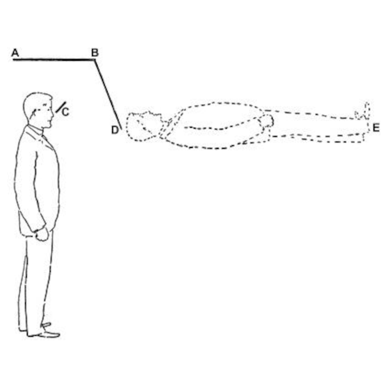

<!doctype html>
<html lang="en">
    <head>
        <link rel="preconnect" href="https://fonts.googleapis.com" />
        <link rel="preconnect" href="https://fonts.gstatic.com" crossorigin />
        <link
            href="https://fonts.googleapis.com/css2?family=Lora:ital,wght@0,400..700;1,400..700&family=Roboto+Mono:ital,wght@0,100..700;1,100..700&display=swap"
            rel="stylesheet"
        />
        <meta charset="UTF-8" />
        <meta name="viewport" content="width=device-width, initial-scale=1.0" />
        <title></title>

        <style>
            div {
                color: white;
            }
            video {
                width: 500px;
                height: 400px;
                object-fit: cover;
            }

            body {
                background: black;
                margin: 0px;
                width: 100%;
                font-family: "Lora", serif;
                font-optical-sizing: auto;
                font-style: normal;
                aspect-ratio: 16/9;
                cursor: none;
            }

            .frame {
                padding-top: 2%;
                padding-bottom: 2%;
            }

            .background {
                background-image: url("ofs-background.png");
                background-repeat: no-repeat;
                background-attachment: fixed;
                background-size: 100%;
                width: 100%;
                height: 100%;
                flex: 1;
                display: flex;
                flex-direction: column;
                justify-content: center;
            }

            .drawings {
                display: flex;
                flex-direction: row;
                padding-top: 8%;
                padding-left: 5%;
                padding-right: 5%;
                height: 52%;
            }

            #options {
                padding-bottom: 5%;
                padding-left: 5%;
                padding-right: 5%;
                height: 35%;
                display: flex;
                flex-direction: row;
                justify-content: center;
                align-items: center;
            }

            #option1 {
                flex: 1;
                font-size: 20px;
                padding: 10px;
                display: flex;
                justify-content: center;
                align-items: center;
                text-align: center;
            }

            #option2 {
                flex: 1;
                font-size: 20px;
                padding: 10px;
                display: flex;
                justify-content: center;
                align-items: center;
                text-align: center;
            }

            #option3 {
                flex: 1;
                font-size: 20px;
                padding: 10px;
                display: flex;
                justify-content: center;
                align-items: center;
                text-align: center;
            }

            button {
                background-color: white;
            }

            video {
                flex: 1;
                width: 100%;
                height: 100%;
                border-radius: 5%;
            }
            .diagram {
                flex: 1;
                width: 100%;
                height: 100%;
                object-fit: contain;
            }

            h1 {
                color: white;
            }

            .center {
                display: flex;
                justify-content: center;
                align-items: center;
            }

            #timer {
                font-family: "Roboto Mono", monospace;
                color: #e44b4b;
                font-size: 300px;
                text-align: center;
            }
        </style>
    </head>

    <body>
        <!--  -->
        <div class="background">
            <div id="timer"></div>
            <div class="drawings">
                
            </div>

            <!--         <div class="drawings" style="width: 100%;">
            
            <div class="center" style="flex:1; padding: 3%;">
                
            </div>
        </div> -->
            <div id="options">
                <h1 id="option1"></h1>
                <h1 id="option2"></h1>
                <h1 id="option3"></h1>
            </div>
        </div>
    </body>
    <script>
        chapters = [
            function () {
                // this is the zeroeth chapter
            },
            function () {},

            function () {
                showTimer(45);
            },
            function () {
                s_timerSong.currentTime = 0;
                s_timerSong.play();
                startTimer(45);
            },
            function () {
                hideTimer();
            },
            function () {
                hideAnswers();
                setAnswers(
                    "Effects of 'Special Interests' on Mental Visualization and Aphantasia",
                    "The Developmental Biology of Bilateral Symmetry: A Review",
                    "The Role of Biomechanical Analysis of Horse and Rider in Equitation Science",
                );
                openCam();
            },
            function () {
                showAnswers();
            },
            function () {
                revealAnswer(3);
            },
            function () {
                document.getElementById("diagram").src = "horse.png";
            },
            function () {
                clear();
            },
            //
            //


            


            function () {
                showTimer(45);
            },
            function () {
                s_timerSong.currentTime = 0;
                s_timerSong.play();
                startTimer(45);
            },
            function () {
                hideTimer();
            },
            function () {
                hideAnswers();
                setAnswers(
                    "Localizing 3D Motion Through the Fingertips: Following in the Footsteps of Elephants",
                    "Use of Sensory Metaphor in Binary Moral Choices: The 'Devil on your Shoulder'",
                    "Physical Grounding of Auditory Hallucinations",
                );
                openCam();
            },
            function () {
                showAnswers();
            },
            function () {
                revealAnswer(1);
            },
            function () {
                document.getElementById("diagram").src = "fig3.png";
            },
            function () {
                clear();
            },


            function () {
                showTimer(45);
            },
            function () {
                s_timerSong.currentTime = 0;
                s_timerSong.play();
                startTimer(45);
            },
            function () {
                hideTimer();
            },
            function () {
                hideAnswers();
                setAnswers(
                    "Facial Processing in Visually Impaired Individuals",
                    "Binocular Effects on Emotional Perception",
                    "Dr. Angry and Mr. Smile",
                );
                openCam();
            },
            function () {
                showAnswers();
            },
            function () {
                revealAnswer(3);
            },
            function () {
                document.getElementById("diagram").src = "faces.png";
            },
            function () {
                clear();
            },
            //
            //


        ];

        var s_wrong = new Audio("s_wrong.mp3");
        var s_timerSong = new Audio("s_45.mp3");

        function startTimer(time) {
            for (let i = 1; i <= time; i++) {
                let num = time - i;
                setTimeout(() => {
                    if (num.toString().length < 2) {
                        document.getElementById("timer").innerHTML =
                            "0" + num.toString();
                    } else {
                        document.getElementById("timer").innerHTML =
                            num.toString();
                    }
                }, i * 1000);
            }
        }

        function showTimer(time) {
            document.getElementById("timer").style.height = "auto";
            document.getElementById("timer").style.opacity = 1;
            document.getElementById("timer").style["margin-top"] = "50%";
            document.getElementById("timer").innerHTML = time.toString();
        }

        function hideTimer() {
            document.getElementById("timer").style.height = 0;
            document.getElementById("timer").style.opacity = 0;
            document.getElementById("timer").style.margin = 0;
        }

        function setAnswers(a1, a2, a3) {
            document.getElementById("option1").innerHTML = a1;
            document.getElementById("option2").innerHTML = a2;
            document.getElementById("option3").innerHTML = a3;
        }
        function showAnswers() {
            document.getElementById("option1").style.opacity = 1;
            document.getElementById("option2").style.opacity = 1;
            document.getElementById("option3").style.opacity = 1;
        }
        function hideAnswers() {
            document.getElementById("option1").style.opacity = 0;
            document.getElementById("option2").style.opacity = 0;
            document.getElementById("option3").style.opacity = 0;
        }

        function revealAnswer(n) {
            if (n != 1) {
                document.getElementById("option1").style.opacity = 0;
            }
            if (n != 2) {
                document.getElementById("option2").style.opacity = 0;
            }
            if (n != 3) {
                document.getElementById("option3").style.opacity = 0;
            }
        }

        function clear() {
            document.getElementById("option1").innerHTML = "";
            document.getElementById("option2").innerHTML = "";
            document.getElementById("option3").innerHTML = "";
            document.getElementById("diagram").src = "blank.png";
            document.getElementById("vid").style.opacity = 0;
        }

        function openCam() {
            if (!videoLoaded) {
                videoLoaded = true;
                let but = document.getElementById("but");
                let video = document.getElementById("vid");
                let mediaDevices = navigator.mediaDevices;
                // video.muted = true;
                mediaDevices
                    .getUserMedia({
                        video: true,
                        audio: true,
                    })
                    .then((stream) => {
                        console.log("YEAH")
                        console.log(stream)
                        // Changing the source of video to current stream.
                        video.srcObject = stream;
                        video.addEventListener("loadedmetadata", () => {
                            video.play();
                        });
                    })
                    .catch(alert);
            }
            document.getElementById("vid").style.opacity = 1;
        }

        document.addEventListener("DOMContentLoaded", () => {
            videoLoaded = false;
            chapter = 1;
            document.body.onkeyup = function (e) {
                if (e.key == " " || e.code == "Space" || e.keyCode == 32) {
                } else if (e.keyCode == 39) {
                    chapter += 1;
                } else if (e.keyCode == 37) {
                    chapter -= 1;
                } else if (e.key == "x") {
                    s_wrong.play();
                }

                chapters[chapter]();
            };
        });
    </script>
</html>
